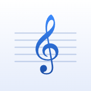

Sheetmusic Viewer & EditorHilfe & Support
Fragen, Probleme oder Wünsche? Schreib uns an sheetmusic.app@web.de. Nenne bitte dein Gerät (z. B. iPad Air oder Samsung Galaxy Tab) und beschreibe kurz, was passiert ist. Wir antworten in der Regel innerhalb weniger Tage.
Häufige Fragen
- Wie kommen Noten in die App?
- Tippe in der Bibliothek auf „+“ und wähle PDF-, MusicXML-, MIDI-, MuseScore-, Finale-, Sibelius- oder Dorico-Dateien. Auf iPad und iPhone erscheinen auch Dateien, die du in iCloud Drive in den Ordner „Sheetmusic/Noten“ legst, in der Bibliothek. Die Android-App gleicht nicht ab; dort bleibt die Bibliothek auf dem Gerät.
- Wie blättere ich um?
- Tippe auf den rechten oder linken Rand der Seite oder wische. Bluetooth-Umblätterpedale, die Pfeil- oder Bildtasten senden, funktionieren auch. Unter „Anzeige“ kannst du stattdessen scrollen oder halbseitig umblättern.
- Wie schreibe ich Notizen in die Noten?
- Mit dem Apple Pencil oder einem Stift jederzeit; mit dem Finger nach einem Tipp auf den Stift oben. Notizen liegen auf Ebenen und lassen sich ein- und ausblenden.
- Wie trete ich einer Gruppe bei?
- Öffne den Einladungslink, den du von der Leitung bekommen hast. Ein Konto brauchst du dafür nicht; Mitglied sein ist kostenlos.
- Was bringt Pro?
- Pro ist ein einmaliger Kauf (kein Abo). Damit kannst du Gruppen gründen und leiten und auf dem iPad oder einem Android-Tablet die Werkstatt nutzen, um Musik zu schreiben und zu bearbeiten.
- Ich habe ein neues Gerät. Wie bekomme ich Pro zurück?
- Öffne Einstellungen → Pro und tippe auf „Kauf wiederherstellen“. Melde dich mit demselben Konto an, wenn du Pro mit einem Konto verbunden hast.
- Warum gibt es die Werkstatt nicht auf dem Handy?
- Der Editor braucht einen größeren Bildschirm. Ein Pro-Kauf auf dem iPhone gilt mit derselben Apple-ID auch auf dem iPad, ein Kauf auf einem Android-Handy mit demselben Google-Konto auch auf dem Tablet. Mit einem Sheetmusic-Konto gilt Pro auf allen Geräten.
- Wie lösche ich mein Konto?
- Einstellungen → Konto → „Konto löschen …“. Dein Konto und seine Daten werden sofort vom Server gelöscht; die Noten in deiner Bibliothek bleiben auf dem Gerät.
Siehe auch die Datenschutzerklärung.
Help & Support
Questions, problems or wishes? Write to sheetmusic.app@web.de. Please mention your device (e.g. iPad Air or Samsung Galaxy Tab) and briefly describe what happened. We usually answer within a few days.
Frequently asked questions
- How do I get scores into the app?
- Tap "+" in the library and choose PDF, MusicXML, MIDI, MuseScore, Finale, Sibelius or Dorico files. On iPad and iPhone, files you put into the "Sheetmusic/Noten" folder in iCloud Drive also appear in the library. The Android app does not sync; there the library stays on the device.
- How do I turn pages?
- Tap the right or left edge of the page, or swipe. Bluetooth page turners that send arrow or page keys work too. Under "Display" you can scroll or turn half pages instead.
- How do I write notes on the music?
- With the Apple Pencil or a stylus at any time; with a finger after tapping the pencil at the top. Notes are kept on layers that can be shown or hidden.
- How do I join a group?
- Open the invite link you got from the group's leader. You don't need an account; being a member is free.
- What does Pro add?
- Pro is a one-time purchase (no subscription). It lets you create and lead groups and, on the iPad or an Android tablet, use the Workshop to write and edit music.
- I have a new device. How do I get Pro back?
- Open Settings → Pro and tap "Restore purchase". If you linked Pro to an account, sign in with the same account.
- Why is the Workshop not on phones?
- The editor needs a bigger screen. A Pro purchase on the iPhone also holds on the iPad with the same Apple ID, and a purchase on an Android phone holds on the tablet with the same Google account. With a Sheetmusic account, Pro holds on all your devices.
- How do I delete my account?
- Settings → Account → "Delete account…". Your account and its data are deleted from the server at once; the scores in your library stay on your device.
See also the privacy policy.